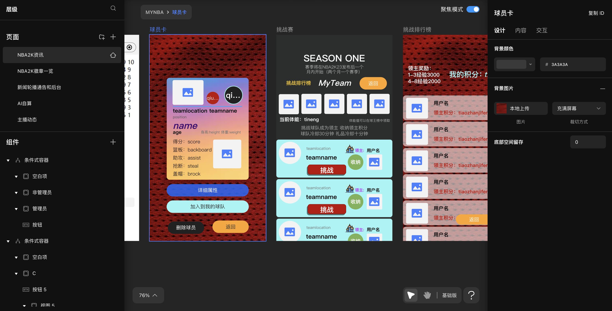
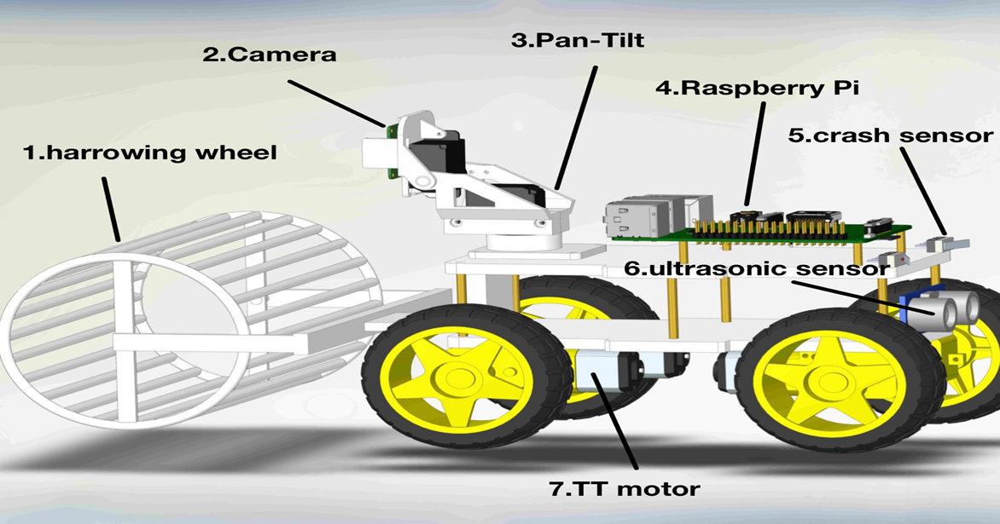
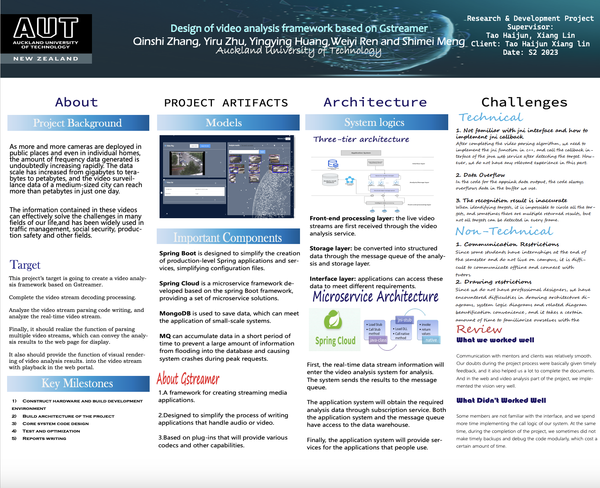

Portfolio
Here are some of the projects I've worked on:
Here are some of the projects I've worked on:
Latisha Besariani Hendra (Back-End), Qinshi Zhang (Front-End), Suifang Zhou (Game Design)

ETERNAGRAM is a text-based adventure game, as players slowly begin to unravel the stories in the distant world by conversing with Ryno through Eternagram, they discover ways to move around in the world by telling Ryno, and learn about the mysteries of the world.
Yuxin Du (Game Design), Qinshi Zhang (Web Dev), Yiru Zhu (Document)
Online NBA is a basketball-themed game available on the WeChat Mini-Program platform.
Qinshi Zhang and Yiru Zhu (course report only), Haiwei Yin, Yaowu Sun, Chuhui Wang.
Smart Picking Ball Robot is an intelligent ball pickup cart aimed at reducing the physical effort involved in collecting table tennis balls, making practice sessions more efficient for players.
Qinshi Zhang (as leader), Yingying Huang, Weiyi Ren, Yiru Zhu, Shimei Meng.
The Video Analysis Framework Based on Gstreamer is a platform capable of automatically identifying people and objects in RTSP video streams. It significantly reduces the workload of surveillance staff and enhances traditional video surveillance systems by offering early warnings of abnormal events, thus preventing potential damage.